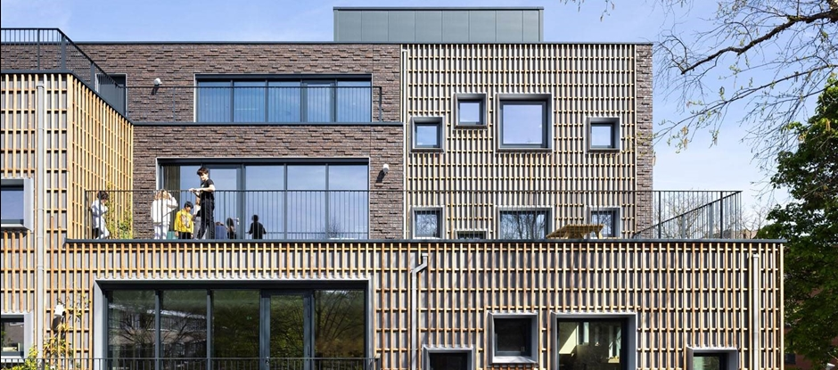
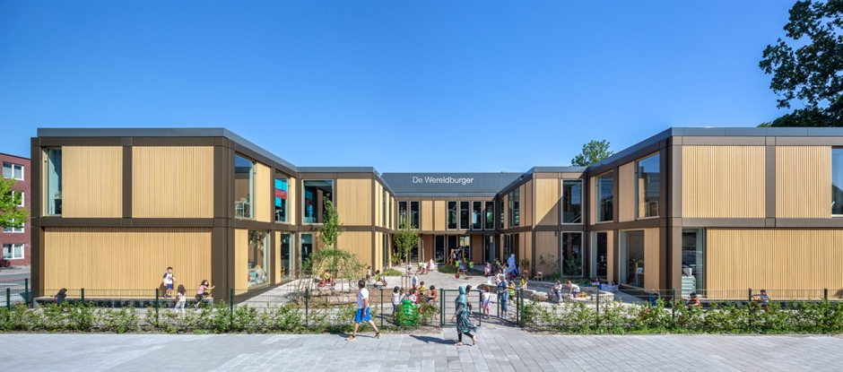
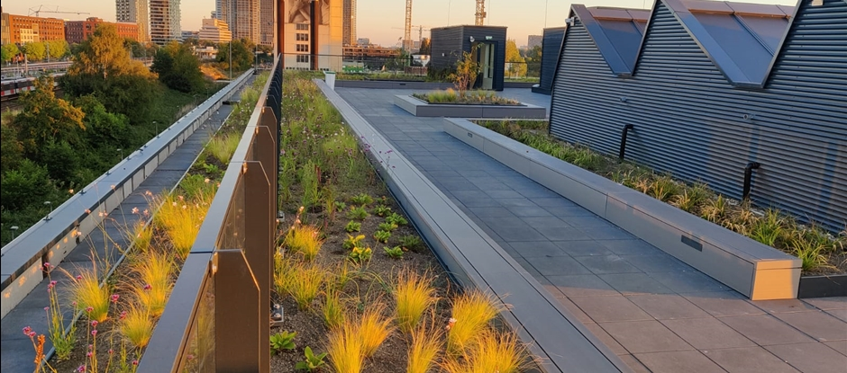

Bijdragen aan een toekomstbestendige stad
Een sociaal-duurzaam Amsterdam
Voor veel mensen is en blijft Amsterdam een zeer aantrekkelijke plek om te wonen en dus blijven
we bouwen aan de groei van de stad.
Maar Amsterdam bestaat natuurlijk uit méér dan alleen woningen.
Daarom bouwen we aan een sociaal-duurzaam Amsterdam: een stad die het welzijn
van haar bewoners belangrijk vindt en verbetert, door niet alleen woningen te bouwen maar ook
te zorgen voor maatschappelijke voorzieningen, voor huidige bewoners en toekomstige
generaties.